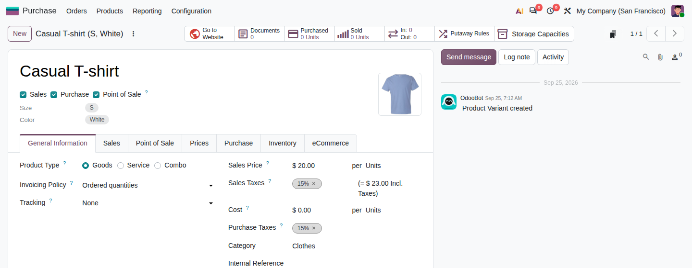
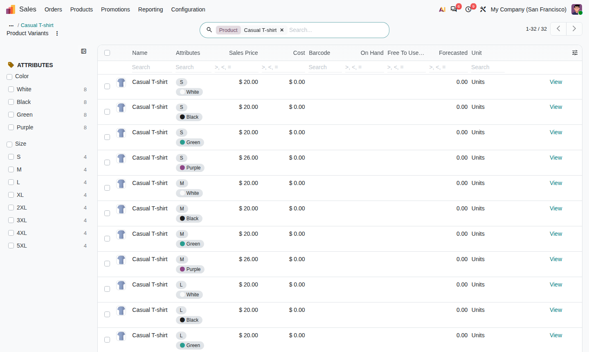
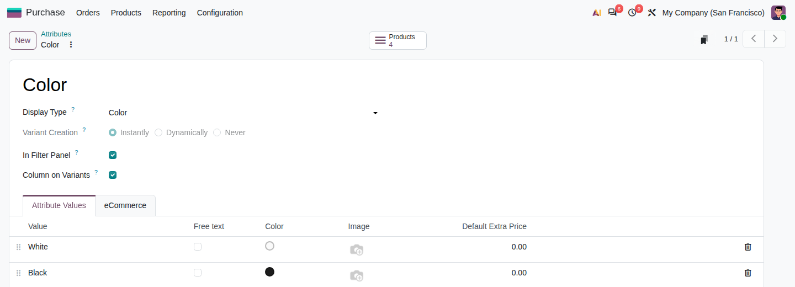
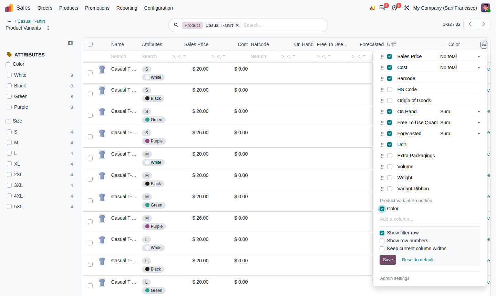
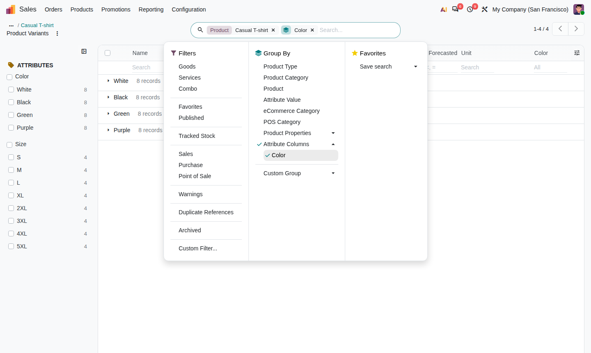

ODOO 20 · PRODUCTS
Read, filter, show and group product variants by their attributes.
Every attribute of a variant on its form, a filter panel of attribute values beside every variant list, and chosen attributes as columns you can group by - without adding a table column per attribute.
Core hides attributes that offer a single value; the variant form lists them all, one row each.
Pick Colour and Size in a side panel. "18 mm" is one value across all products, not one per product.
Mark an attribute Column on Variants to list and group by it. Kept as a property, so no schema change.
The attribute tags are replaced by one row per attribute: its name on the left, its value on the right.

Every product-variant list gets an Attributes panel, one section per attribute, with counts. Tick several values to narrow the list. Group By › Attribute Value groups by value across products.

The panel shows at most 200 values per attribute. Untick In Filter Panel on attributes with many values; they can still be searched in the search bar.
On the attribute (Sales › Configuration › Attributes), tick Column on Variants.

The attribute then appears as an optional column in every variant list, including Inventory › Reporting › Stock. With the Columns panel of View Manager it is listed under Product Variant Properties; tick it to show it.

Open Group By › Attribute Columns and pick the attribute.

Screenshots show demo data in an Odoo 20 test database.